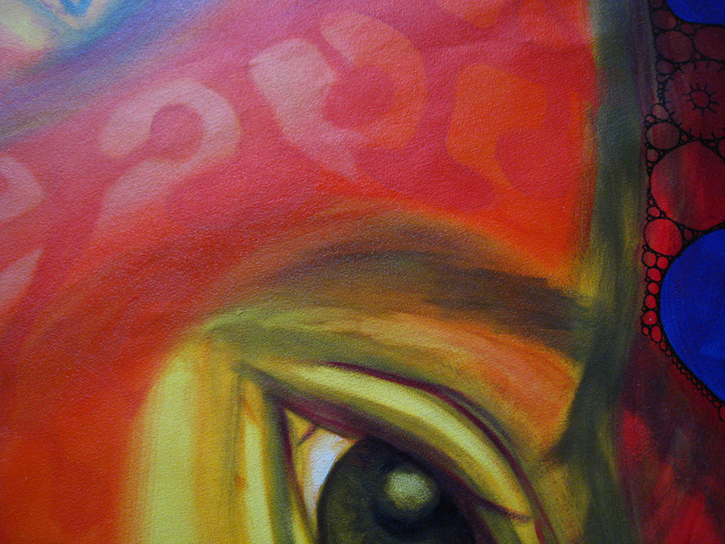
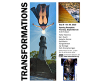
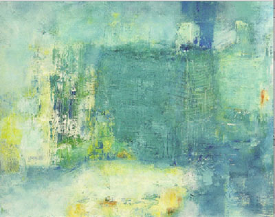

Other Exhibitions

Natacha Sochat: neuroMorphic
June 17 - August 11, 2011
Natacha Sochat neuroMorphic

Arsenal Center for the Arts: Seven artists Sept. 9 - Oct. 30, 2010
visit site / Watertown Tab


Louise Weinberg Apparitions
DietzSpace October 16, 2010
view site